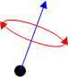

Quaternion
Quaternions are a mathematical construct that represents a rotation in three dimensions. It is not as intuitive as the Euler angles that are used for most of the rotation within Unrealscript. A rotator, is a rotation using Euler angles and is the "standard" type of rotation within Unrealscript. UT2003 has native support for Quaternions, though through custom scripts you can use quaternions in Unreal Tournament too.
How they work
There are two ways to explain a quaternion: the technical way and the practical way. I much prefer the practical way for purposes of Unrealscript because the mathematical expression of a quaternion is for most purposes irrelevant within Unrealscript.
The Practical Way
This explanation assumes you have a working knowledge of rotators and vectors. As you know, you can cast a rotator to a vector or vice versa. Because a vector has a direction, it can be used store the facing of an object. However, a vector stores only the actual facing of the object, and not the complete rotation of the object. A vector-based "rotation" always has roll set to 0 for all intents and purposes. Technically, it does not have a roll component but it will gain a roll of 0 when cast back into a rotator. Vectors, however, have an advantage over rotators - they never suffer from "gimbal lock." To experience Gimbal Lock you can simply look straight up or down inside the game and note that your rotation is halted when you are looking directly up or directly down. Vector rotation does not suffer from this, but it lacks the roll component, which sometimes you want to retain. This is where a quaternion can be useful. A quaternion is basically a vector with a roll component tacked on. The rotation of an object defined by a quaternion is the facing as defined by the vector, rolled by the roll component of the quaternion. This is best demonstrated with a picture:

|
The Technical Way
Quaternions encode spatial rotations by four real numbers (or two complex numbers), whereas the linear representation of these transformations as 3x3 matrices requires nine. Interpolating the quaternionic representation of a sequence of rotations is more natural than doing so for the familiar Euler angles, such as yaw, pitch, and roll. The quaternions occupy a smooth, seamless, isotropic space which is a generalization of the surface of a sphere. Thus, there is no need for special care to avoid singularities, such as gimbal lock.
A quaternion is like a  complex number ( x + iy ), but extended some more, to x + iy + jz + kw. Similarly to complex numbers, i2 = j2 = k2 = -1. Note the xyzw might be in different places: some writers use w for the real part; some writers treat the ijk part as a vector and consider the quaternion to be essentially (scalar, vector).
complex number ( x + iy ), but extended some more, to x + iy + jz + kw. Similarly to complex numbers, i2 = j2 = k2 = -1. Note the xyzw might be in different places: some writers use w for the real part; some writers treat the ijk part as a vector and consider the quaternion to be essentially (scalar, vector).
So what does this have to do with the 3D world? Well, a rotation has 4 numbers too: 3 give the axis of rotation as a vector, and the 4th gives how far you rotate, as an angle.
It turns out that when you multiply two quaternions, the product represents the rotation obtained by combining the two original rotations the two original quaternions represented.
Built-In Quaternion Functions
- Quat QuatProduct (Quat A, Quat B) [static]
- Multiplies two Quaternions together. Interestingly enough, this will return a Quaternion representing the addition of the two rotations that the original Quaternions represented. So, for example you had one quaternion representing Yaw 0, Pitch 0, Roll 90 degrees, and a quaternion representing Yaw 90 degrees, Pitch 0, and Roll 0, you will end up with Yaw 90 degrees, Pitch 0, and Roll 90 degrees. Though this is a simple example that would not be hard to do without using quaternions, it could be more complicated if both angles were jutting out at arbitrary angles unknown at compile time. Note that multiplication of quaternions is not commutative. To apply a rotation A followed by a rotation B, use the result of QuatProduct(B, A).
- Quat QuatInvert (Quat A) [static]
- Inverts a Quaternion. The restlt will be facing the opposite direction and be rolled the opposite direction about it's axis.
- vector QuatRotateVector (Quat A, vector B) [static]
- Rotates the given vector around the axis specified by the Quaternion, by the amount specified by the quaternion.
- Quat QuatFindBetween (Vector A, Vector B) [static]
- If vector A and vector B both have lengths of 1, this will return a quaternion representing a rotation that can turn the first vector into the second. So, for instance, QuatRotateVector( QuatFindBetween( A, B ), A ) would return B.
- Quat QuatFromAxisAndAngle (Vector Axis, Float Angle) [static]
- Allows you to manually specify a quaternion by providing the axis (aka the facing of the quaternion) as a vector and the "roll" of that axis. (aka facing) Because Quaternions use radians for their "roll," I believe that the angle must be specified in radians.
Shambler: N.B. QuatFindBetween seems to have a bug with inverted input vectors, QuatFindBetween(vect(-1,0,0), vect(1,0,0)) will return a quaternion with absoloutly no rotational info.
Other Useful Functions
Identity Quaternion
An identity quaternion is just like an identity matrix in that multiplication with it produces an ouput equal to the input.
static final function quat QuatIdentity() { local quat result; result.x = 0; result.y = 0; result.z = 0; result.w = 1; return result; }
Foxpaw: No offense, but what is the point of this function? Why would one need an identity quaternion?
Mychaeel: That's a bit like asking "What does one need the number 1 for?" 
Pingz: It's like setting a float to 1 so that anything multiplyed with it returns itself insted of zero. Just like an identity matrix. Saying q = QuatIdentity(); was much nicer than putting all that junk inline.
Foxpaw: Yeah, but what is the point of multiplying something by 1? The 1 is err. something about "tacit rules of a number." Anyways.. if something is multiplied by 1, then the result will always be the same as the other operand, so why bother? Wouldn't it be better to save the cycles and just remove the expression entirely?
Tarquin: You might want to check if something is equal to the identity.
Mychaeel: Foxpaw, stop a minute to think. Is multiplying a variable with the unity value constant really the only thing that comes into your mind?
Dirk Fist: It can be used as a place holder, in a chain for a missing componnent
Converting a Rotator to a Quaternion
This function converts the specified rotation into a quaternion representing that rotation.
const URotToRadian=0.000095873799; static final postoperator float URotations( float URots ) { return URots * URottoRadian; } static function Quat RotToQuat( rotator Rot ) { local Quat X, Y, Z; X = QuatFromAxisAndAngle( Vect(1,0,0), Rot.Roll URotations ); Y = QuatFromAxisAndAngle( Vect(0,1,0), Rot.Pitch URotations ); Z = QuatFromAxisAndAngle( Vect(0,0,1), Rot.Yaw URotations ); X = QuatProduct( X, Y ); X = QuatProduct( X, Z ); return X; }
Converting Quaternion to a Rotator
Returns a normalized rotator from the input quaternion.
// 65535 / 2PI const RADIANS_TO_UU = 10430.21919552736082f; // 65535 / 4 const UU_90_DEGREES = 16383.75f; static final function Rotator QuatToRotator( quat Q ) { local float x, y, z, w, s; local rotator result; x = Q.x; y = Q.y; z = Q.z; w = Q.w; s = 2.0f * ( w * y - x * z ); // It is invalid to pass values outside // of the range -1,1 to asin()... so don't. if ( s < 1.0f ) { if ( -1.0f < s ) { result.yaw = atan( 2.0f*(x*y+w*z), 1.0f-2.0f*(y*y+z*z) ) * RADIANS_TO_UU; result.pitch = asin( s ) * RADIANS_TO_UU; result.roll = atan( 2.0f*(y*z+w*x), 1.0f-2.0f*(x*x+y*y) ) * RADIANS_TO_UU; } else { result.yaw = 0; result.pitch = -UU_90_DEGREES; result.roll = -atan( 2.0f*(x*y-w*z), 1.0f-2.0f*(x*x+z*z) ) * RADIANS_TO_UU; } } else { result.yaw = 0; result.pitch = UU_90_DEGREES; result.roll = atan( 2.0f*(x*y-w*z), 1.0f-2.0f*(x*x+z*z) ) * RADIANS_TO_UU; } return Normalize( result ); }
DemonThing: Wouldn't the first lines be
// 65536 / 2PI const RADIANS_TO_UU = 10430.37835047045272f; // 65536 / 4 const UU_90_DEGREES = 16384.0f;
? I thought a full circle is 65536 = 216 UU.
Normalizing a Quaternion
Returns a unit quaternion which is any quaternion with a magnitude of 1.
static final function quat QuatNormalize( quat q ) { local float mag; mag = ( q.x*q.x ) + ( q.y*q.y ) + ( q.z*q.z ) + ( q.w*q.w ); q.x = q.x / mag; q.y = q.y / mag; q.z = q.z / mag; q.w = q.w / mag; return q; }
Slerp Between Quaternions
This function performs a spherical linear interpolation between quaternion U and V. F is a value between 0 and 1 where 0 returns U, 1 returns V, and all other values return a smooth interpolation between them.
static final function quat QuatSlerp( quat u, quat v, float f ) { local float alpha,beta,theta,sin_t,cos_t; local int flip; local quat result; flip = 0; // Force the input within range. f = fmin( f, 1.0f ); f = fmax( f, 0.0f ); cos_t = u.x*v.x+u.y*v.y+u.z*v.z+u.w*v.w; if ( cos_t < 0.0f ) { cos_t = -cos_t; flip=1; } if ( ( 1.0f - cos_t ) < 0.000001f ) { beta = 1.0f - f; alpha = f; } else { theta = acos( cos_t ); sin_t = sin( theta ); beta = sin( theta - f * theta ) / sin_t; alpha = sin( f * theta ) / sin_t; } if ( flip != 0 ) alpha = -alpha; result.x = beta * u.x + alpha * v.x; result.y = beta * u.y + alpha * v.y; result.z = beta * u.z + alpha * v.z; result.w = beta * u.w + alpha * v.w; return result; }